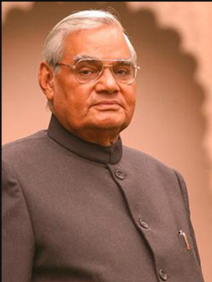

Atal Bihari Vajpayee
1924-2018
Ajatshatru (Man Without Enemies)
Atal Bihari Vajpayee ji (25 December 1924 – 16 August 2018) was a towering Indian statesman, visionary politician, and celebrated poet who served as the Prime Minister of India three times. Born in Gwalior, Madhya Pradesh, he began his public journey as a freedom fighter and RSS worker before co-founding the Bharatiya Jana Sangh and later becoming the founding president of the Bharatiya Janata Party (BJP) in 1980. Admired across party lines for his poetic brilliance, extraordinary oratory skills, and inclusive political ideology, he earned the title of "Ajatshatru"—a person who has no enemies. He was awarded India's highest civilian honor, the Bharat Ratna, in 2015.
As Prime Minister, Vajpayee ji transformed India’s economic and strategic landscape through bold leadership and key national initiatives. His tenure is highlighted by the Pokhran-II nuclear tests in 1998, which established India as a nuclear power, and his decisive leadership during the 1999 Kargil War. He championed major infrastructure developments like the Golden Quadrilateral highway network and the Pradhan Mantri Gram Sadak Yojana, while also expanding economic liberalization. Notably, he became the first non-Congress leader to serve a complete five-year term as Prime Minister (1999–2004). His birth anniversary, December 25th, is celebrated annually across India as Good Governance Day (Susashan Diwas).
Biography
- Early Life & Foundation: Born on December 25, 1924, in Gwalior, Madhya Pradesh. Joined the Rashtriya Swayamsevak Sangh (RSS) as a pracharak and participated in the Quit India Movement of 1942.
- Literary & Oratorical Heritage: A master poet and journalist who edited publications like Panchjanya and Rashtradharma. Renowned worldwide for his eloquence, includingKey points to include when structuring or writing a biography section:
- Early Life & Background: Birthdate/place, family context, education, and early influences or formative experiences.
- Career & Achievements: Major career milestones, breakthrough moments, key contributions, and notable accomplishments or projects.
- Personal Life & Values: Personal interests, relationships, core beliefs, and philanthropic work or passions outside of their main profession.
- Impact & Legacy: Influence on their field or community, awards/honors received, and long-term historical or societal significance.